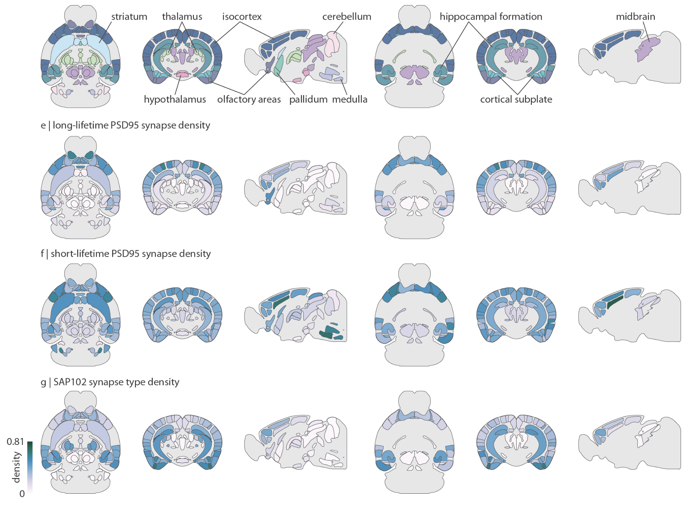
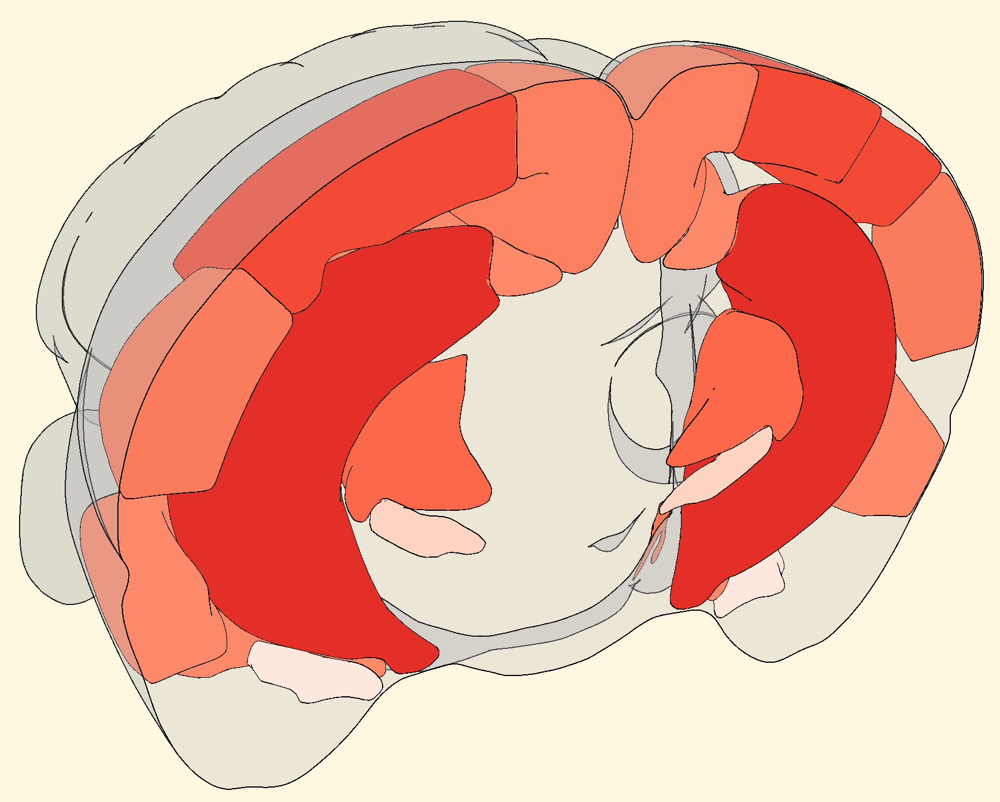
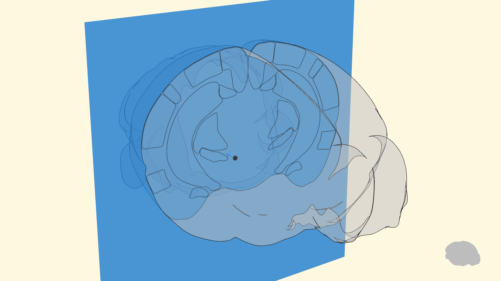
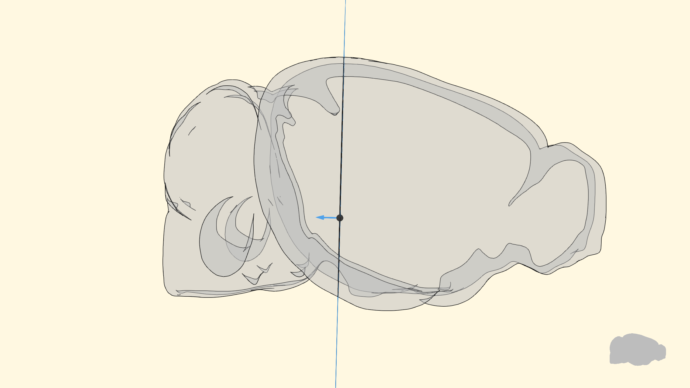
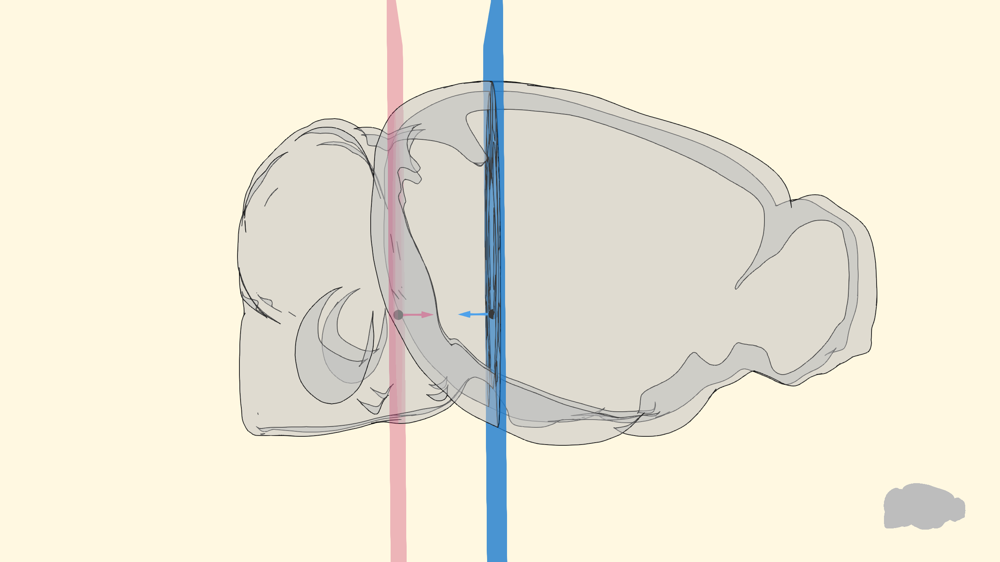
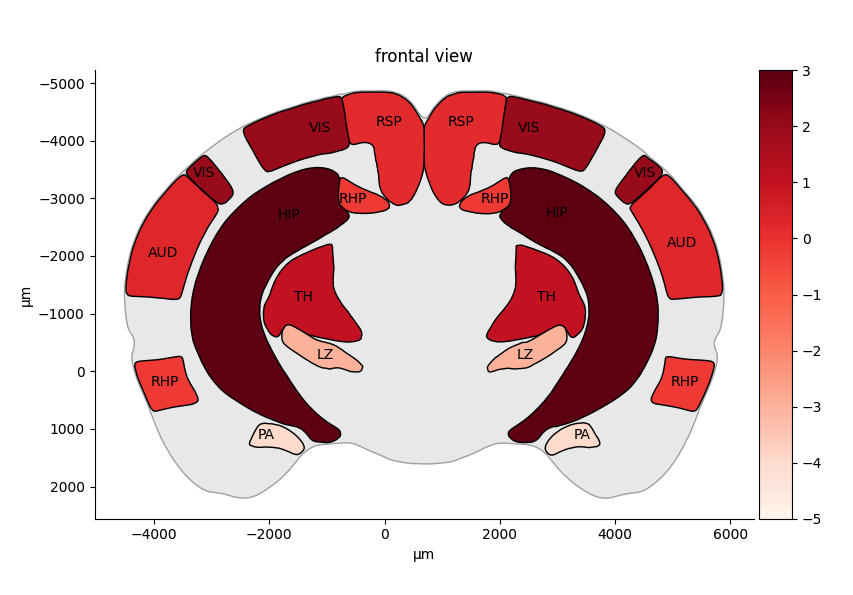

brainglobe-heatmap#
brainglobe-heatmap allows you to create heatmaps, mapping scalar values for each brain region (e.g., number of labelled cells in each region) to a color and creating visualizations in 2D (using matplotlib or 3D (using brainrender).
 2D heatmap generated using matplotlib - adapted from Fig 1. from Hansen et al (2025)
 3D heatmap generated using brainrender
Installation#
pip install brainglobe-heatmap
User guide#
The starting point for a heatmap visualization is a dict assigning scalar values to a set of brain regions (identified by their acronym).
For example:
values = dict( # scalar values for each region
TH=1,
RSP=0.2,
AI=0.4,
SS=-3,
MO=2.6,
...
)
brainglobe-heatmap creates a brainrender 3D Scene with the given regions colored according the values in the dictionary.
Next, to create visualizations like the ones shown above, the three dimensional scene needs to be sliced to expose
the relevant parts.
This is done by specifying the position and orientation of a Plane which cuts through the scene.

The orientation is set by the direction of a normal vector specified by the user.

Everything that is on the side opposite where the normal vector will be cut and discarded. To keep a section of the 3D brain, two planes with normal vectors facing in opposite directions are used:

and everything in-between the two planes is kept as a slice.
Slicing plane position#
Finding the right position and orientation to the plane can take some tweaking. brainglobe-heatmap provides a planner class that makes the process easier by showing the position of the planes and how they intersect with the user provided regions (see image above).
In examples/plan.py there’s an example showing how to use the planner:
import brainglobe_heatmap as bgh
planner = bgh.plan(
values,
position=(
8000,
5000,
5000,
),
orientation="frontal", # orientation, or 'sagittal', or 'horizontal' or a tuple (x,y,z)
thickness=2000, # thickness of the slices used for rendering (in microns)
)
The position of the center of the plane is given by a set of (x, y, z) coordinates. The orientation can be specified by a string (frontal, sagittal, horizontal) which will result in a standard orthogonal slice, or by a vector (x, y, z) with the orientation along the 3 axes.
When using one of the named orientations, you don’t need to pass a whole set of (x, y, z) coordinates for the plane center. A single value is sufficient as the other two won’t affect the plane position:
f = bgh.Heatmap(
values,
position=1000,
orientation="sagittal", # 'frontal' or 'sagittal', or 'horizontal' or a tuple (x,y,z)
thickness=1000,
atlas_name="allen_cord_20um",
format='2D',
).show()
Also, you can create a slice with a plane centered in the brain by passing position=None:
f = bgh.Heatmap(
values,
position=None,
orientation="sagittal", # 'frontal' or 'sagittal', or 'horizontal' or a tuple (x,y,z)
thickness=1000,
atlas_name="mpin_zfish_1um",
format='2D',
title='zebra fish heatmap'
).show(xlabel='AP (μm)', ylabel='DV (μm)')
Visualization#
Once happy with the position of the slicing planes, creating a visualization is as simple as:
bgh.Heatmap(
values,
position=(
8000,
5000,
5000,
),
# 'frontal' or 'sagittal', or 'horizontal' or a tuple (x,y,z)
orientation="frontal",
title="frontal view",
vmin=-5,
vmax=3,
cmap='Reds',
annotate_regions=True,
format="2D",
).show()
vmin, vmax: Define the minimum and maximum values for the cmap color range.cmap: Specifies the colormap used for visualization, Standard matplotlib colormaps like ‘Reds’, ‘Blues’, ‘viridis’, or ‘Purples’ can be used. See more here.annotate_regions: Automatically annotates regions on the visualization. Can also annotate regions with custom text{"VIS": "Visual Cortex"}or only specified regions["VIS", "HIP"].format: Specifies if a 2D plot should be made (usingmatplotlib) or a 3D rendering instead (usingbrainrender).

Regions coordinates#
You can use brainglobe-heatmap to get the coordinates of the 2D ‘slices’ (in the 2D plane’s coordinates system):
regions = ['TH', 'RSP', 'AI', 'SS', 'MO', 'PVZ', 'LZ', 'VIS', 'AUD', 'RHP', 'STR', 'CB', 'FRP', 'HIP', 'PA']
coordinates = bgh.get_structures_slice_coords(
regions,
position=(
8000,
5000,
5000,
),
orientation="frontal", # 'frontal' or 'sagittal', or 'horizontal' or a tuple (x,y,z)
)
Using brainglobe-heatmap with other atlases#
brainglobe-heatmap uses brainrender which, in turn, uses brainglobe’s Atlas API under the hood. That means that all of brainglobe-heatmap’s functionality is compatible with any of the atlases supported by the atlas API. bgh.Heatmap, bgh.planner and bgh.get_structures_slice_coords all accept a atlas_name argument, pass the name of the atlas name you’d like to use!
For more information see the API’s documentation.
Contributing#
Contributions to brainglobe-heatmap are more than welcome. Please see the Developer’s guide.
Citing brainglobe-heatmap#
If you use brainglobe-heatmap in your work, please cite it as:
Federico Claudi, Adam Tyson, Luigi Petrucco, Mathieu Bourdenx, carlocastoldi, Rami Hamati, & Alessandro Felder. (2024). brainglobe/brainglobe-heatmap. Zenodo. https://doi.org/10.5281/zenodo.10375287
If you use brainrender via brainglobe-heatmap (i.e. for 3D visualisation), please also cite it:
Claudi, F., Tyson, A. L., Petrucco, L., Margrie, T.W., Portugues, R., Branco, T. (2021) "Visualizing anatomically registered data with Brainrender" <i>eLife</i> 2021;10:e65751 [doi.org/10.7554/eLife.65751](https://doi.org/10.7554/eLife.65751)
BibTeX:
@article{Claudi2021,
author = {Claudi, Federico and Tyson, Adam L. and Petrucco, Luigi and Margrie, Troy W. and Portugues, Ruben and Branco, Tiago},
doi = {10.7554/eLife.65751},
issn = {2050084X},
journal = {eLife},
pages = {1--16},
pmid = {33739286},
title = {{Visualizing anatomically registered data with brainrender}},
volume = {10},
year = {2021}
}